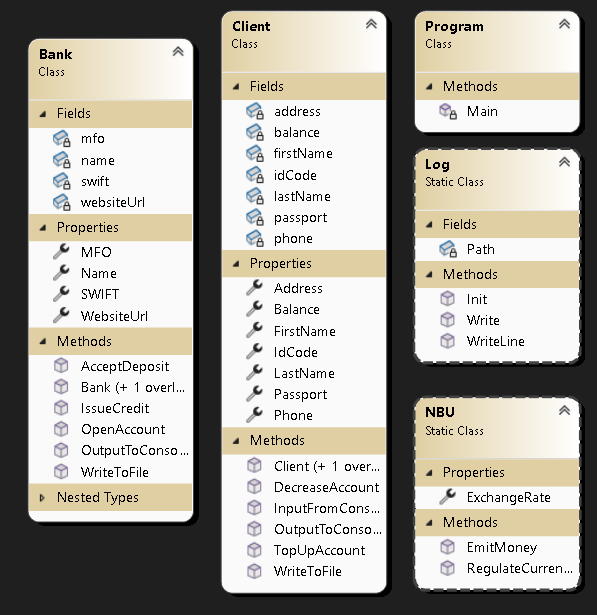

Опанувати принципи об'єктно-орієнтованого програмування в C# шляхом створення класів, конструкторів, властивостей, методів, а також вкладених, часткових і статичних класів. Набути практичних навичок моделювання предметної області (на прикладі обробки даних про обслуговування клієнтів в банку) у вигляді консольного застосунку.
Розробити консольний застосунок мовою C# для обробки даних про обслуговування клієнтів в банку.

Вихідні коди проєкту розділені на декілька файлів відповідно до вимог завдання:
Введіть ім'я: Sebastian Введіть прізвище: Pastukh Введіть паспорт: P123932 Введіть адресу: Uran 26 Введіть інд. код: 129338 Введіть телефон: 38099972165 Клієнта Sebastian Pastukh створено/оновлено. Клієнт: Sebastian Pastukh, Паспорт: P123932, Баланс: 0 грн Банк: ПриватБанк, МФО: 305299, SWIFT: PBANKUA [Web Приват24] Баланс клієнта Pastukh: 0 грн
Як бачимо, програма дозволяє успішно створити нового клієнта за допомогою консольного вводу. Всі необхідні поля ініціалізуються правильно, а початковий баланс клієнта за замовчуванням дорівнює 0 грн. Також коректно працює метод виведення інформації про клієнта та банк, включаючи метод контролю залишків з вкладеного класу Website.
Введіть суму поповнення: 1500 Рахунок поповнено на 1500 грн. Поточний баланс: 1500 грн. Введіть суму для витрати: 149 Знято 149 грн. Поточний баланс: 1351 грн.
Як бачимо, операції поповнення та зменшення суми на рахунку (наприклад, оплата покупок) відпрацьовують правильно. Баланс своєчасно оновлюється після кожної транзакції.
Введіть суму кредиту: 1444 Введіть відсоткову ставку (%): 13 Рахунок поповнено на 1444 грн. Поточний баланс: 2795 грн. Кредит видано клієнту Pastukh. Сума до повернення з відсотками: 1631.72 грн. Введіть суму депозиту: 1300 Введіть річну ставку (%): 10 Введіть кількість місяців: 12 Знято 1300 грн. Поточний баланс: 1495 грн. Депозит оформлено. Очікуваний прибуток через 12 місяців: 1430.0000000000000000000000000 грн.
При видачі кредиту баланс клієнта коректно збільшується на суму кредиту, а програма правильно розраховує кінцеву суму до повернення з урахуванням відсотків. Відкриття депозиту успішно списує кошти з рахунку клієнта і за формулою розраховує очікуваний прибуток.
Введіть суму переказу Анні Івановій: 1200 [Web Приват24] Переказ коштів від Pastukh до Іванова... Знято 1200 грн. Поточний баланс: 295 грн. Рахунок поповнено на 1200 грн. Поточний баланс: 1200 грн. Введіть суму переказу Анні Івановій: 123982139021381 [Web Приват24] Переказ коштів від Pastukh до Іванова... Недостатньо коштів на рахунку! Введіть суму для оплати комуналки: 13333 [Web Приват24] Оплата комунальних послуг... Недостатньо коштів на рахунку!
Методи вкладеного класу Website успішно проводять переказ коштів, знімаючи їх у відправника. Крім того, програма правильно виконує перевірку: при спробі переказати або витратити більше коштів, ніж є на рахунку, вона блокує операцію з повідомленням "Недостатньо коштів на рахунку!". Це захищає баланс від переходу у від'ємні значення.
Введіть обсяг валюти ($): 1000 НБУ купив 1000$ на міжбанку. Долар виріс. Поточний курс: 50.00 грн/дол. Введіть обсяг валюти ($): 10000 НБУ продав 10000$ на міжбанку. Долар впав. Поточний курс: 1.00 грн/дол. Введіть суму емісії (грн): 32102310 НБУ надрукував 32102310 грн (емісія). Долар виріс. Поточний курс: 32103.31 грн/дол.
Як бачимо, методи статичного класу NBU ефективно регулюють курс валют. Купівля валюти на міжбанку та емісія грошей призводять до підвищення курсу долара (інфляції), тоді як продаж валюти призводить до його падіння. Це повністю відповідає логіці завдання.
Загальний висновок: Відповідно до даних результатів можна зробити висновок, що програма працює коректно, всі класи та їх методи виконують свої функції згідно з умовами завдання, а вбудовані перевірки надійно захищають дані від некоректного вводу або перевитрат.
Під час виконання лабораторної роботи було розроблено консольний застосунок мовою C# для моделювання роботи банку. Успішно реалізовано класи Client та Bank з необхідними полями, властивостями, конструкторами та методами. Опановано роботу з вкладеними класами (клас Website), частковими класами (розділення класу Bank) та статичними класами (NBU). Програма дозволяє здійснювати банківські операції (поповнення, зняття, кредити, депозити), а також логує результати у консоль та текстовий файл.